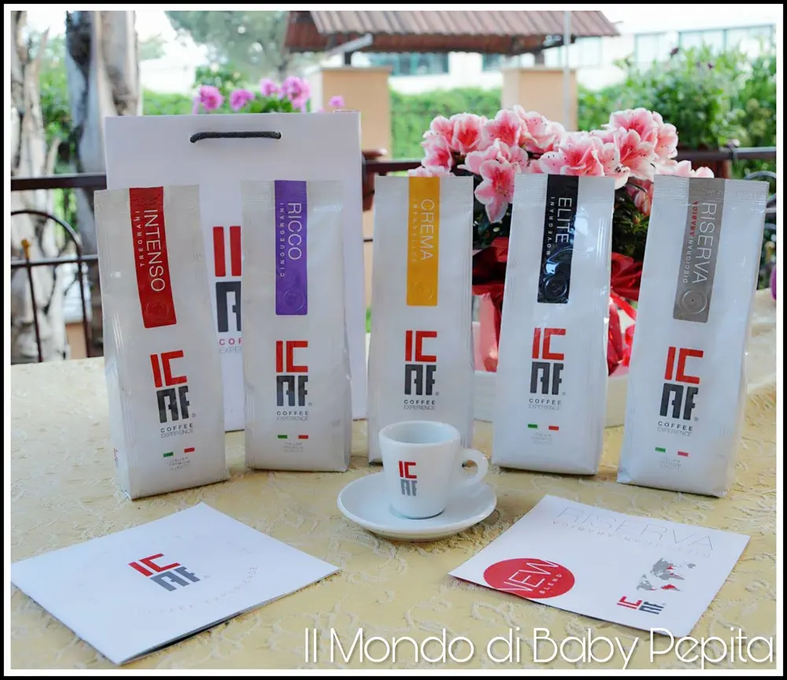
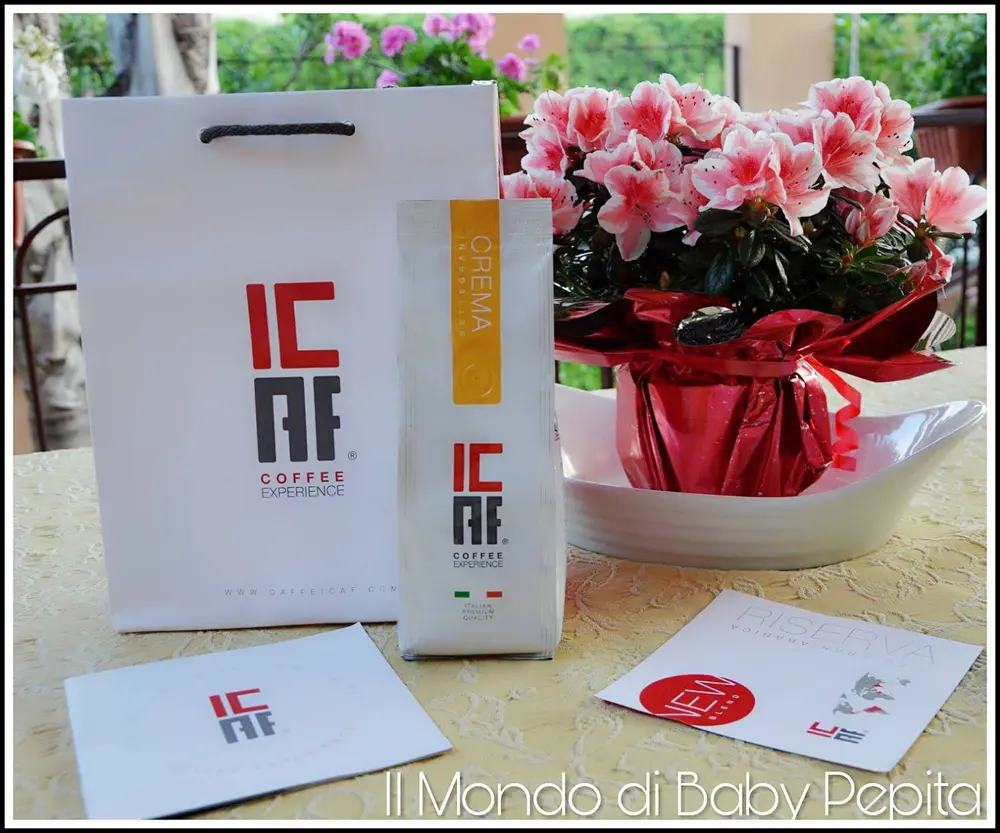
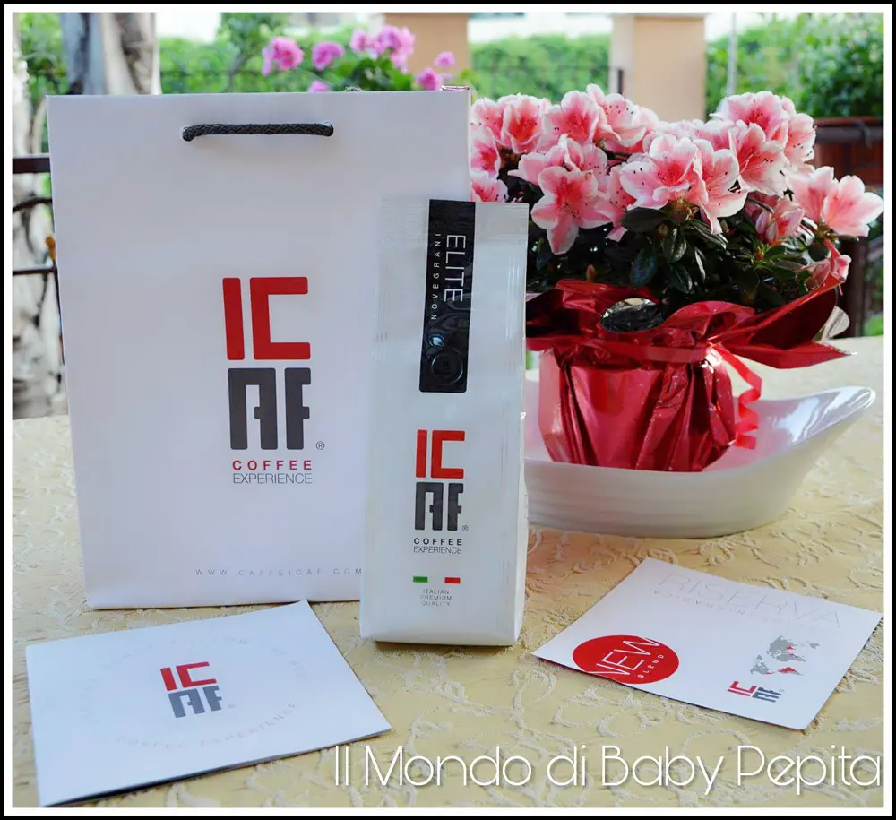
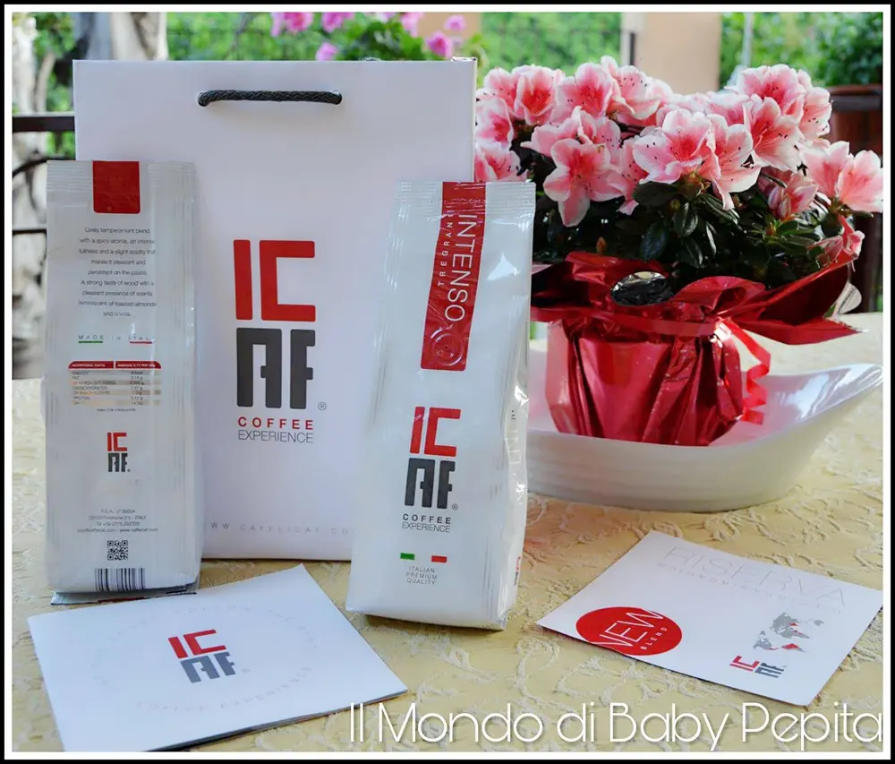
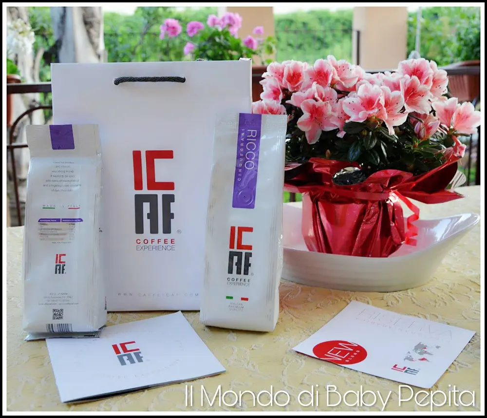
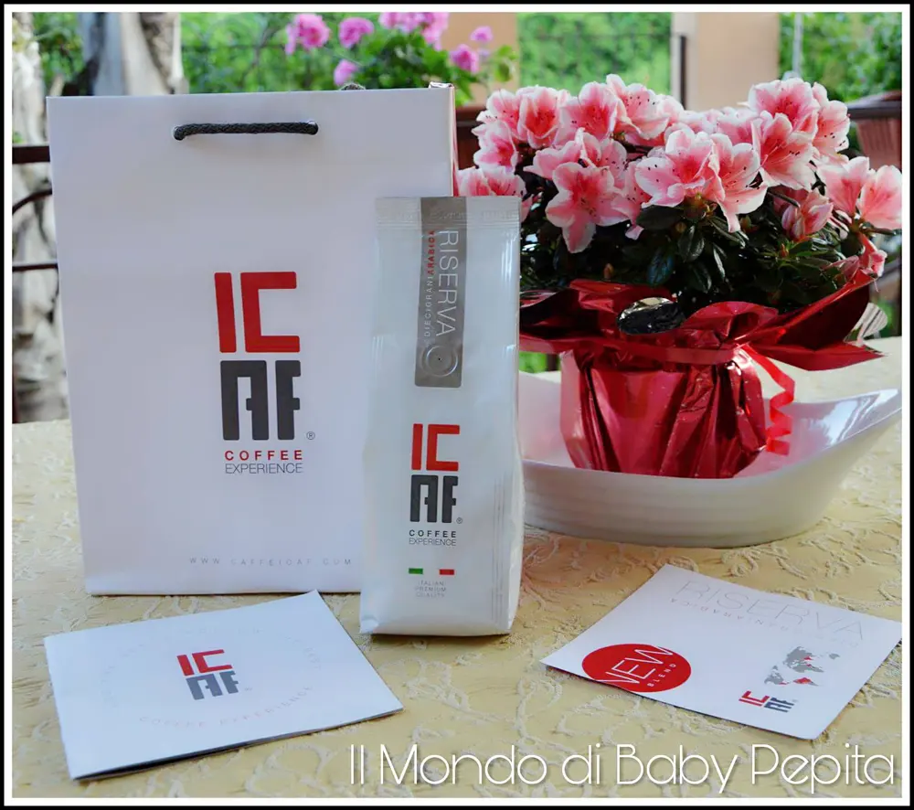
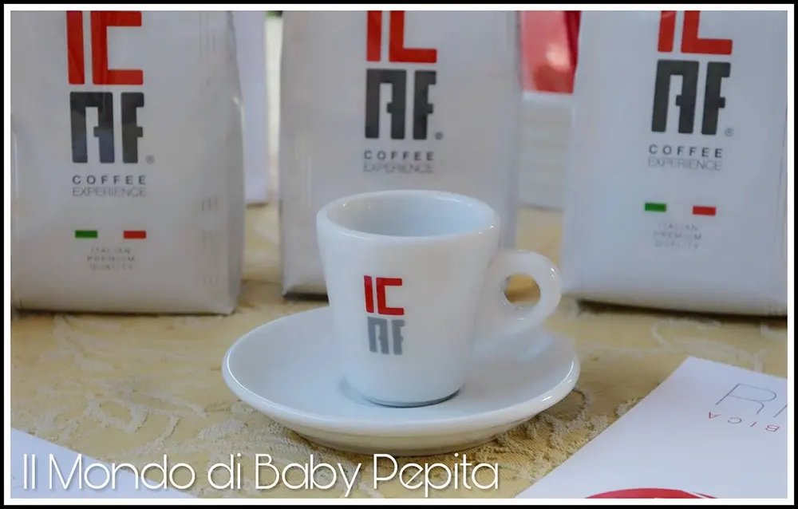

ICAF CAFFE'

Sono stata omaggiata di un kit di Moka di vari gusti. Sono sincera, non conoscevo questo caffè e sono rimasta sorpresa.

Questo periodo bevo caffè icaf, per testarlo e nessuna delle 5 miscele mi ha ancora delusa.
Vi spiego brevemente la storia:
Il fondatore dell'azienda Icaf, Aldo Calore, alla fine degli anni '50 entrò a lavorare in una delle più importanti torrefazioni italiani.
Preso dalla grande passione per questo lavoro, diventò un punto di riferimento per chi lavorava il caffè.
Arrivò così il momento di aprire una torrefazione tutta sua.
Nel 1975 dunque, nacque l'azienda Icaf.
Inizia un percorso di nuove miscele che ben presto vengono sempre più richieste.
Diffondono così, la qualità delle loro miscele nel mondo.

Vi parlo di ogni miscela:
● ICAF CREMA SETTEGRANI
Confezione da 250 g.
Il sapore di questa miscela è proprio come dice il nome 'cremosa'. Un retrogusto pulito e leggero con un gusto di nocciola tostata. Un vero piacere per una pausa caffè.
● ICAF ELITE NOVEGRANI
confezione da 250 g.

Il gusto di questo caffè può sembrare strano ma è davvero sfizioso da assaporare. Ha infatti un sapore fruttato di mele mature, di agrumi e un profumo di miele d'acacia. Il caffè si presenta corposo non dolcissimo. Un buon equilibrio tra acidità e dolcezza.
●ICAF INTENSO TREGRANI

Confezione da 250 g.
Come appunto dal nome, è una miscela intensa quindi sentiremo tutto il sapore del chicco di caffè. Con una leggera acidità ci regala però un gusto molto gradevole.
●ICAF RICCO CINQUEGRANI
Confezione da 250 g.

All'olfatto sentiremo un profumo speziato con una miscela che si presenta decisa e corposa in tazza con un retrogusto di cioccolato fondente.
●ICAF RISERVA DIECIGRANI ARABICA
Confezione da 250 g.

Offre una tazza di caffè molto liscia e perfettamente equilibrata. Al primo assaggio possiamo notare che emergono fragranze di agrumi con leggero sapore di cioccolato amaro. Successivamente il caffè sprigiona tutta la sua ricchezza aromatica regalandoci un retrogusto persistente.
Io ripeto, non sono rimasta per niente delusa da questo caffè. Sia per le miscele in se per sé e sia per l'azienda che è stata cordiale e disponibile.

Voglio inoltre ricordare che Icaf offre, oltre queste miscele che vi ho elencato, anche in cialde, in capsule, accessori per bar e macchine da caffè.
L'unica cosa che non posso informarvi è sul prezzo poichè per parlare di ciò bisogna rivolgersi direttamente a loro sui loro social che adesso vi dirò.